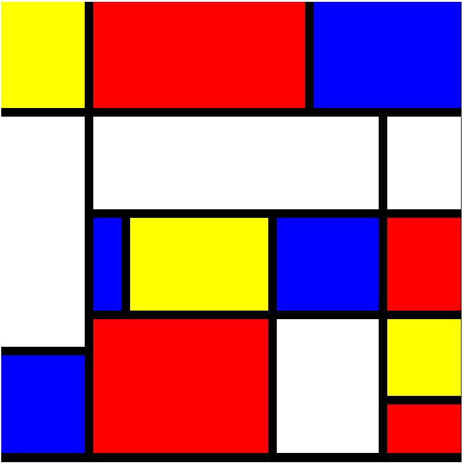
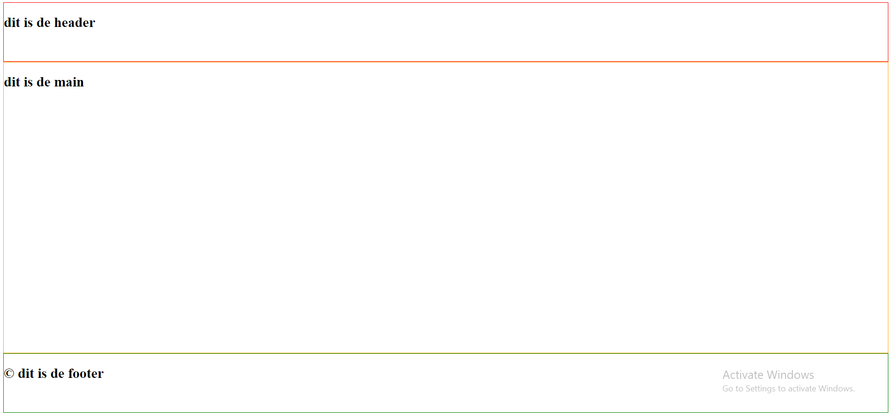

Home
Over mij
Tarieven
Projecten
Vaardigheden
Contact
Dit is een Mondriaan die ik gemaakt heb

Dit is een opdracht die ik gemaakt heb

In deze opdracht moeten de kleuren veranderen na een tik
De kleuren veranderen in deze opdracht